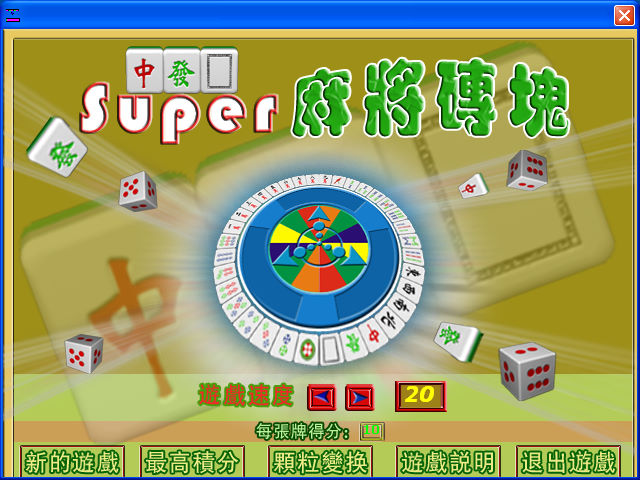
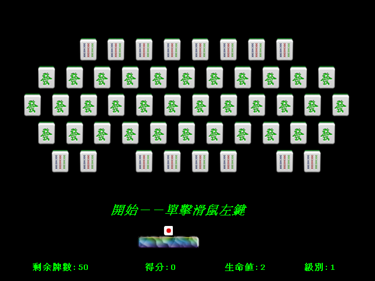

名稱：超級麻將磚塊／Super麻將磚塊／超級麻將磚塊棋 (中文版)
簡介：伊世紀2002年出品的打磚塊遊戲，收錄在三國象棋皇棋藝遊戲大合集、棋藝遊戲大合
集裡。各種磚塊均以麻將做為造型，為本遊戲的特色。但全部只有五關，似乎有點過
少，而且滑鼠操控並不太順，嚴重影響到遊戲的娛樂性。


保護：無。
備註：「三國象棋皇棋藝遊戲大合集」版本必須在Win9x系統下安裝。
備註：若覺得遊戲速度過快，可在主畫面調低遊戲速度。
修改：Brix2000.exe
1.生命值不減少
66 83 E9 01 56
-- -- -- 00 --